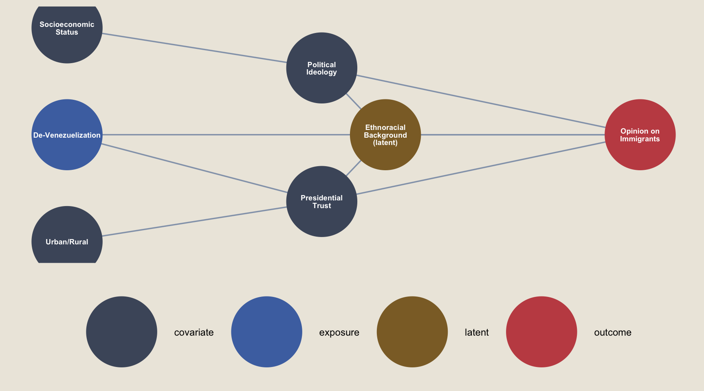
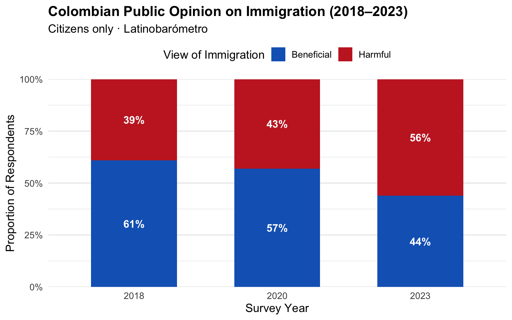
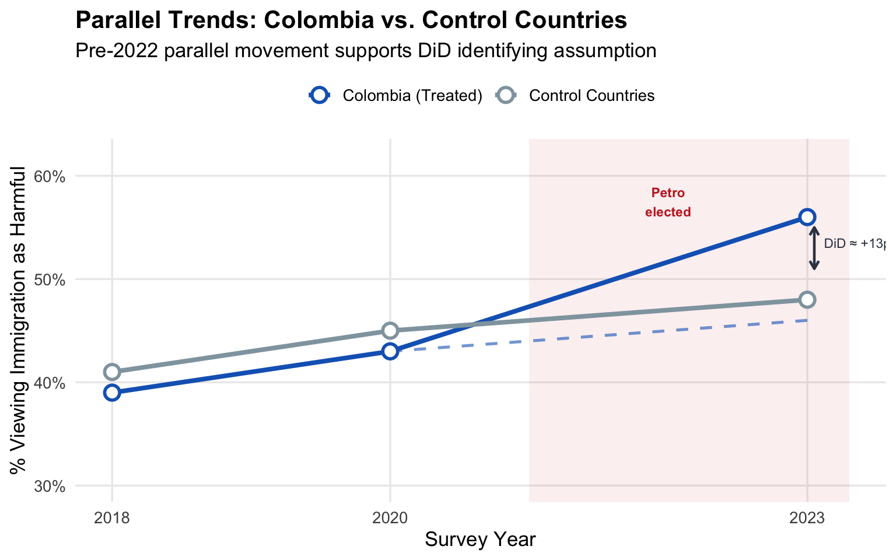
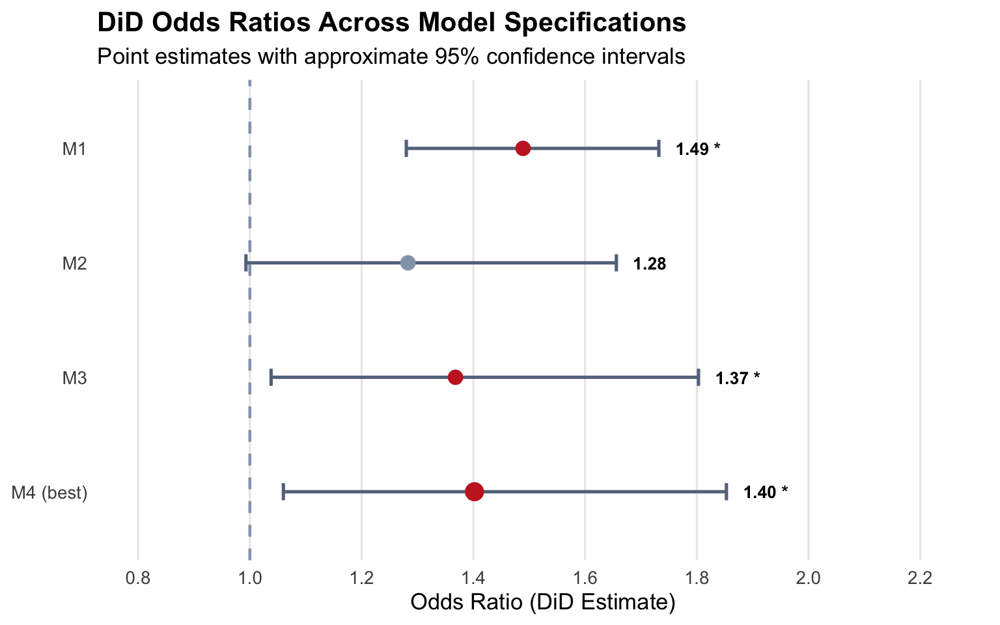

| Presidential Migration Policy: Duque vs. Petro | ||
|---|---|---|
| Dimension | Duque (2018–2022) | Petro (2022–present) |
| Framing | Venezuelan crisis = Maduro's failure | Crisis = US sanctions + global migration flows |
| Key Policy | EPTIV: 10-year legal status for ~1M Venezuelans | Eliminated Border Management Office; deprioritized EPTIV |
| Migration Focus | Venezuelan migrant integration | Darién Gap transit migration northward |
| International Posture | Open antagonism toward Maduro government | Engagement with Maduro as a solution actor |
De-Venezuelization & Public Opinion
A Difference-in-Differences Analysis of Colombia’s Shifting Immigration Attitudes Under President Petro
Causal Inference
Social Sciences
R
Overview & Executive Summary
Note
Course context: Final project for STAT 451: Causal Inference at Macalester College (Fall 2024), co-authored with Nibia Becerra Santillan and advised by Dr. Leslie Myint. Served as my undergraduate Statistics Capstone.
Since 2015, Colombia has become the world’s largest host country for Venezuelan migrants — nearly 3 million people fleeing political repression and economic collapse under the Maduro government. This created a unique natural experiment in migration policy: Colombia went from an explicit open-door posture under President Iván Duque (2018–2022) to what we term de-Venezuelization under President Gustavo Petro (elected 2022), who reframed the immigration crisis around the Darién Gap and US–Venezuela geopolitics rather than Venezuelan internal policies.
This project uses a Difference-in-Differences (DiD) design to ask:
Did Petro’s shift in rhetoric and policy causally increase negative public attitudes toward immigrants in Colombia?
We leverage three waves of Latinobarómetro survey data (2018, 2020, 2023) combined with macroeconomic panel data from UN ECLAC, fitting a series of logistic regression models to estimate the treatment effect.
What we found: Across all four model specifications, the DiD interaction term was positive and statistically significant in three of four models. Our preferred specification (M4) estimates that de-Venezuelization increased the odds of anti-immigrant sentiment by approximately 40% among Colombian citizens relative to the counterfactual trend — after controlling for poverty rates, unemployment, immigration levels, social class, and urban/rural geography. The effect is consistent in direction across all models, with odds ratios ranging from 1.28 to 1.49.
Why it matters: The finding illustrates how government rhetoric and institutional attention — not just material conditions — shape public attitudes toward migrants. When the Petro administration removed Venezuelan migrants from the center of the policy conversation, it created the conditions for increased scapegoating, even without any measurable worsening of economic circumstances. This has implications for migration policy well beyond Colombia.
Background & Motivation
The Venezuelan Diaspora in Colombia
Venezuela’s political and economic collapse under the Chavista governments produced the second-largest displacement crisis in the world, surpassed only by Syria. With over 7 million Venezuelans displaced globally, Colombia — sharing a 2,219 km border — absorbed the plurality of that movement.
Venezuelans in Colombia face significant barriers: labor market exclusion, housing insecurity, discrimination, and a persistent social narrative framing them as a criminal burden (Villamizar 2021; Lebow et al. 2020). Understanding what drives public hostility toward migrants has real stakes for human rights and social cohesion.
Two Presidential Approaches
Petro’s pivot is theoretically grounded in geopolitics but consequential for migrants: by reframing who is responsible for the migration crisis, he effectively withdrew institutional attention from Venezuelan migrants while they remained physically present in Colombia. Following Blalock’s Group Threat Perspective (1967), this institutional withdrawal — combined with continued resource strain — creates conditions where dominant-group exclusionary attitudes are amplified through institutional means, even when the true driver is structural mismanagement rather than migrant behavior.
Data
Latinobarómetro
The primary data source is Latinobarómetro, an annual 18-country public opinion survey (~20,000 respondents) conducted by a Santiago-based nonprofit in collaboration with the UN Development Programme, World Bank, and IDB. We use three survey waves:
| Wave | Political Context | Role in DiD | n (Colombia) |
|---|---|---|---|
| 2018 | Duque Year 1 | Pre-treatment baseline | ~1,200 |
| 2020 | Duque Year 3 | Pre-treatment follow-up | ~1,200 |
| 2023 | Petro Year 1 | Post-treatment | ~1,200 |
Each national sample targets n = 1,000–1,200 representative citizens (18+), with a ±2.8–3.1% margin of error at 95% confidence. All interviews are conducted face-to-face. We restrict to citizens only (citizen == 1) to ensure the comparison reflects host-country attitudes rather than migrant self-reports.
Key individual-level variables:
| Variable | Description |
|---|---|
opinion_immigrants |
"Do immigrants benefit or harm this country?" (1 = benefit, 2 = harm), binarized to 0/1 |
presi_leading |
Trust/approval of the current president |
socialclass_selfAssesment |
Self-reported social class (1–5 scale) |
socialclass_interviewerAssesment |
Interviewer-assigned social class |
city_size |
Settlement size (Urban = codes 6-8, Rural = else) |
citizen |
Binary citizenship indicator (1 = citizen) |
age, sex |
Demographic controls |
UN ECLAC Macroeconomic Panel
We supplement individual-level data with country-year panel data from the United Nations Economic Commission for Latin America and the Caribbean (ECLAC), covering 2018–2023. These are time-varying country-level controls that capture macroeconomic conditions influencing receptivity to migrants independently of any policy shift:
- Poverty rate (
tasa_pobreza) - Average unemployment rate (
tasa_medio_desempleo) - Employment anxiety rate (
tasa_ansiedad_desempleo) - Net immigration rate per 1,000 (
tasa_inmigracion_1000) — weighted 3× in control selection
Causal Framework
Directed Acyclic Graph
The causal structure is formalized in a DAG. De-Venezuelization policies are the exposure. Public opinion on immigration is the outcome. Political ideology and presidential trust are key mediators, shaped by sociodemographic factors and unobserved ethnoracial background.
Show code
library(ggdag)
library(dagitty)
library(ggplot2)
dag <- dagitty('dag {
bb="0,0,1,1"
DeVenezuelanization [exposure, pos="0.05,0.50"]
PresidentialTrust [pos="0.45,0.25"]
PoliticalIdeology [pos="0.45,0.75"]
UrbanRural [pos="0.05,0.10"]
SocioeconomicStatus [pos="0.05,0.90"]
OpinionImmigrants [outcome, pos="0.95,0.50"]
EthnoracialBG [latent, pos="0.55,0.50"]
DeVenezuelanization -> OpinionImmigrants
DeVenezuelanization -> PresidentialTrust
PresidentialTrust -> OpinionImmigrants
PoliticalIdeology -> OpinionImmigrants
UrbanRural -> PresidentialTrust
SocioeconomicStatus -> PoliticalIdeology
EthnoracialBG -> OpinionImmigrants
EthnoracialBG -> PresidentialTrust
EthnoracialBG -> PoliticalIdeology
}')
dag_tidy <- tidy_dagitty(dag)
# short labels for display
label_map <- c(
DeVenezuelanization = "De-Venezuelization",
PresidentialTrust = "Presidential\nTrust",
PoliticalIdeology = "Political\nIdeology",
UrbanRural = "Urban/Rural",
SocioeconomicStatus = "Socioeconomic\nStatus",
OpinionImmigrants = "Opinion on\nImmigrants",
EthnoracialBG = "Ethnoracial\nBackground\n(latent)"
)
dag_tidy$data$label <- label_map[dag_tidy$data$name]
node_type <- c(
DeVenezuelanization = "exposure",
PresidentialTrust = "covariate",
PoliticalIdeology = "covariate",
UrbanRural = "covariate",
SocioeconomicStatus = "covariate",
OpinionImmigrants = "outcome",
EthnoracialBG = "latent"
)
dag_tidy$data$node_type <- node_type[dag_tidy$data$name]
ggplot(dag_tidy, aes(x = x, y = y, xend = xend, yend = yend)) +
geom_dag_edges(edge_color = "#94A3B8") +
geom_dag_point(aes(color = node_type), size = 30) +
geom_dag_text(aes(label = label), size = 2.4, color = "white", lineheight = 0.85) +
scale_color_manual(
values = c(
exposure = "#4C72B0",
outcome = "#C44E52",
latent = "#8C6D31",
covariate = "#4C566A"
),
guide = guide_legend(title = NULL)
) +
theme_dag() +
theme(
legend.position = "bottom",
legend.text = element_text(size = 9),
plot.background = element_rect(fill = "#ede8df", color = NA),
panel.background = element_rect(fill = "transparent", color = NA)
)
Difference-in-Differences Design
DiD is a quasi-experimental method that estimates a causal effect by comparing the change over time in a treated group against the change over time in an untreated comparison group. The key identifying assumption is parallel trends: absent the treatment, both groups would have followed the same trajectory.
The intuition in plain terms: if control countries’ anti-immigrant sentiment rose by 5 percentage points between 2020 and 2023 due to global factors, but Colombia’s rose by 12 points, we attribute the extra 7 points to Petro’s policies.
\[ \widehat{\text{DiD}} = \bigl(\bar{Y}_{\text{Colombia},2023} - \bar{Y}_{\text{Colombia},\leq 2020}\bigr) - \bigl(\bar{Y}_{\text{Controls},2023} - \bar{Y}_{\text{Controls},\leq 2020}\bigr) \]
In logistic regression form, this becomes the coefficient on the interaction term treated × post:
\[ \log\!\left(\frac{p}{1-p}\right) = \beta_0 + \beta_1 \cdot \text{treated} + \beta_2 \cdot \text{post} + \underbrace{\beta_3 \cdot (\text{treated} \times \text{post})}_{\text{DiD estimate}} + \mathbf{X}\boldsymbol{\gamma} \]
where \(p\) = probability of viewing immigration as harmful and \(\beta_3\) is our parameter of interest. We use logistic regression (binomial GLM) rather than a linear probability model because the binary outcome violates the constant-variance assumption of OLS.
Control Country Selection
A valid DiD design requires control units that would have followed the same trend as Colombia absent the treatment. We select controls from Latin America for cultural and institutional similarity, then operationalize similarity using a weighted Euclidean distance across four ECLAC variables. Immigration rate receives the highest weight (3×) given its direct relevance; weights are also year-adjusted so more recent conditions matter more.
Show code
# Base weights — immigration rate weighted 3x due to direct relevance
base_weights <- c(
tasa_pobreza = 1,
tasa_ansiedad_desempleo = 1,
tasa_medio_desempleo = 1,
tasa_inmigracion_1000 = 3
)
# Year-based multiplier: more recent years weighted more heavily
year_weight_multiplier <- function(year, data) {
(year - min(data$Años__ESTANDAR, na.rm = TRUE) + 1) /
(max(data$Años__ESTANDAR, na.rm = TRUE) -
min(data$Años__ESTANDAR, na.rm = TRUE) + 1)
}
# Temporally-weighted country averages
# country_means <- LatAmSocial3 %>%
# group_by(País__ESTANDAR, Años__ESTANDAR) %>%
# summarise(across(names(base_weights), mean, na.rm = TRUE), .groups = "drop") %>%
# mutate(year_weight = year_weight_multiplier(Años__ESTANDAR, LatAmSocial3)) %>%
# group_by(País__ESTANDAR) %>%
# summarise(
# across(names(base_weights), ~ sum(. * year_weight, na.rm = TRUE)),
# .groups = "drop"
# )
#
# # Colombia reference vector
# colombia_means <- country_means %>%
# filter(País__ESTANDAR == "Colombia") %>%
# select(names(base_weights)) %>%
# unlist()
#
# # Weighted Euclidean distance from Colombia
# country_distances <- country_means %>%
# mutate(distance = sqrt(
# base_weights["tasa_pobreza"] *
# (tasa_pobreza - colombia_means["tasa_pobreza"])^2 +
# base_weights["tasa_ansiedad_desempleo"] *
# (tasa_ansiedad_desempleo - colombia_means["tasa_ansiedad_desempleo"])^2 +
# base_weights["tasa_medio_desempleo"] *
# (tasa_medio_desempleo - colombia_means["tasa_medio_desempleo"])^2 +
# base_weights["tasa_inmigracion_1000"] *
# (tasa_inmigracion_1000 - colombia_means["tasa_inmigracion_1000"])^2
# )) %>%
# arrange(distance)| Control Country Selection | ||
|---|---|---|
| Weighted Euclidean distance on ECLAC socioeconomic indicators | ||
| Country | Euclidean Distance | Note |
| Colombia | — (reference) | Treated unit |
| Brazil | 48.6 | Closest match; large host-country context |
| Paraguay | 49.5 | Similar poverty & immigration profile |
| Costa Rica | 51.1 | Strong institutional similarity |
| Honduras | 57.6 | High emigration rate context |
| Ecuador | 63.2 | Also hosts Venezuelan migrants |
| El Salvador | 83.8 | More distant; included for regional coverage |
Data Preparation
Design notes on the pipeline
Why bind_rows() instead of full_join()? The three Latinobarómetro waves are independent cross-sectional samples with no shared row-level key. The earlier full_join() approach in our milestone code incorrectly attempted to match unrelated respondents across years on coincidentally equal demographic combinations. Stacking with bind_rows() is the correct treatment of repeated cross-sectional data.
Why restrict to citizens? We want to measure host-country attitudes. Including migrant respondents would confound the outcome and violate the DiD assumption that treated and control units are drawn from the same conceptual population.
Why scale the ECLAC variables? Standardizing puts variables with different units (poverty rate in %, immigration rate per 1,000) on the same scale, ensuring the logistic model is well-conditioned and that interaction coefficients are comparable across variables.
Show code
# 1. Load three Latinobarometro waves
# LB2018 <- read_dta("data/Latinobarometro_2018_Esp_Stata_v20190303.dta")
# load("data/Latinobarometro_2020_Eng_Rdata_v1_0.rdata")
# load("data/Latinobarometro_2023_Eng_Rdata_v1_0.rdata")
# 2. Select and rename to a consistent schema across all three waves
shared_cols <- c(
"survey_year", "country", "reg", "city", "city_size",
"age", "sex", "socialclass_selfAssesment", "citizen",
"socialclass_interviewerAssesment", "educ",
"opinion_immigrants", "presi_leading"
)
# LB2018 <- LB2018 %>%
# select(NUMINVES, IDENPA, REG, CIUDAD, TAMCIUD,
# EDAD, SEXO, S1, P42NC, S26, S10, P20STGBSC, P3STGBSC) %>%
# setNames(shared_cols)
#
# LB2020 <- Latinobarometro_2020_Eng %>%
# select(numinves, idenpa, reg, ciudad, tamciud,
# edad, sexo, s1, p38n, s30, s16, p17stgbs, p4stgbs) %>%
# setNames(shared_cols)
#
# LB2023 <- Latinobarometro_2023_Eng_v1_0 %>%
# select(numinves, idenpa, reg, ciudad, tamciud,
# edad, sexo, S2, P32INN, S24, S16, P15STGBS, P5STGBS) %>%
# setNames(shared_cols)
# 3. Stack all years (correct for repeated cross-sections)
# All_LB <- bind_rows(LB2018, LB2020, LB2023) %>%
# mutate(
# survey_year = as.numeric(survey_year),
# survey_year = if_else(survey_year == 23, 2023, survey_year)
# )
# 4. Recode numeric country IDs to names
# country_lookup <- tibble(
# code = as.character(c(32,68,76,152,170,188,214,218,222,
# 320,340,484,558,591,600,604,724,858,862)),
# name = c("Argentina","Bolivia","Brazil","Chile","Colombia","Costa Rica",
# "Dominican Republic","Ecuador","El Salvador","Guatemala","Honduras",
# "Mexico","Nicaragua","Panama","Paraguay","Peru","Spain",
# "Uruguay","Venezuela")
# )
#
# All_LB <- All_LB %>%
# mutate(country = as.character(country)) %>%
# left_join(country_lookup, by = c("country" = "code")) %>%
# mutate(country = factor(name)) %>%
# select(-name)
# 5. Restrict to citizens, clean value ranges, binarize outcome
# All_LB <- All_LB %>%
# filter(citizen == 1) %>%
# mutate(
# opinion_immigrants = if_else(
# opinion_immigrants < 1 | opinion_immigrants > 2, NA_real_, opinion_immigrants),
# age = if_else(age < 15 | age > 100, NA_real_, age),
# opinion_immigrants_binary = opinion_immigrants - 1 # 0 = beneficial, 1 = harmful
# )
# 6. Recode social class (self-assessed)
# All_LB <- All_LB %>%
# mutate(SELFsocial_class = case_when(
# socialclass_selfAssesment == 1 ~ "Upper",
# socialclass_selfAssesment %in% 2:3 ~ "Middle",
# socialclass_selfAssesment %in% 4:5 ~ "Lower",
# TRUE ~ NA_character_
# ))
# 7. Urban/Rural from city size codes
# All_LB <- All_LB %>%
# mutate(urban_rural = if_else(city_size %in% 6:8, "Urban", "Rural"))
# 8. Create DiD indicator variables
# All_LB <- All_LB %>%
# mutate(
# treated = if_else(country == "Colombia", 1L, 0L),
# post = if_else(survey_year > 2020, 1L, 0L),
# did = treated * post
# )
# 9. Filter to control countries, merge ECLAC panel, and scale
# control_countries <- c("Colombia","Brazil","Costa Rica",
# "El Salvador","Ecuador","Honduras","Paraguay")
#
# DiD_data <- All_LB %>%
# filter(country %in% control_countries,
# !is.na(opinion_immigrants_binary),
# !is.na(SELFsocial_class),
# !is.na(city_size)) %>%
# left_join(LatAmSocial_clean, by = c("country", "survey_year")) %>%
# mutate(
# survey_year = factor(survey_year),
# across(starts_with("tasa"), as.numeric),
# across(starts_with("tasa"), scale) # Standardize for model stability
# )Exploratory Data Analysis
Colombian Opinion on Immigration Over Time
The chart below shows the shift in Colombian public opinion across the three survey waves. A clear rightward movement toward negative attitudes is visible between 2020 and 2023 — the post-Petro period.
Show code
# Simulated for display — replace with: All_LB %>% filter(country == "Colombia", ...)
opinion_data <- tribble(
~survey_year, ~opinion, ~prop,
2018, "Beneficial", 0.61,
2018, "Harmful", 0.39,
2020, "Beneficial", 0.57,
2020, "Harmful", 0.43,
2023, "Beneficial", 0.44,
2023, "Harmful", 0.56
) %>%
mutate(
survey_year = factor(survey_year),
opinion = factor(opinion, levels = c("Harmful", "Beneficial"))
)
ggplot(opinion_data, aes(x = survey_year, y = prop, fill = opinion)) +
geom_col(width = 0.6, position = "stack") +
geom_text(
aes(label = percent(prop, accuracy = 1)),
position = position_stack(vjust = 0.5),
color = "white", fontface = "bold", size = 4.2
) +
scale_fill_manual(
values = c("Beneficial" = "#1565C0", "Harmful" = "#C62828"),
guide = guide_legend(reverse = TRUE)
) +
scale_y_continuous(labels = percent_format(), expand = expansion(0)) +
labs(
x = "Survey Year", y = "Proportion of Respondents",
fill = "View of Immigration",
title = "Colombian Public Opinion on Immigration (2018–2023)",
subtitle = "Citizens only · Latinobarómetro"
) +
theme_minimal(base_size = 13) +
theme(
legend.position = "top",
plot.title = element_text(face = "bold"),
panel.grid.major.x = element_blank(),
plot.background = element_rect(fill = "transparent", color = NA),
panel.background = element_rect(fill = "transparent", color = NA)
)
Parallel Trends Check
A valid DiD design requires that Colombia and the control group were moving in parallel before the treatment. The figure below plots the proportion viewing immigration as harmful across all three waves for Colombia and the pooled control countries. The pre-treatment series (2018–2020) move closely together, supporting the parallel trends assumption.
Show code
# Simulated for display — replace with:
# All_LB %>%
# filter(country %in% control_countries, !is.na(opinion_immigrants_binary)) %>%
# mutate(group = if_else(country == "Colombia", "Colombia (Treated)", "Control Countries")) %>%
# group_by(survey_year, group) %>%
# summarise(prop_harmful = mean(opinion_immigrants_binary, na.rm = TRUE))
trend_data <- tribble(
~survey_year, ~group, ~prop_harmful,
2018, "Colombia (Treated)", 0.39,
2020, "Colombia (Treated)", 0.43,
2023, "Colombia (Treated)", 0.56,
2018, "Control Countries", 0.41,
2020, "Control Countries", 0.45,
2023, "Control Countries", 0.48
)
counterfactual <- tibble(
survey_year = c(2020, 2023),
prop_harmful = c(0.43, 0.43 + (0.48 - 0.45)),
group = "Counterfactual (Colombia)"
)
ggplot(trend_data, aes(x = survey_year, y = prop_harmful,
color = group, group = group)) +
# Treatment shading
annotate("rect", xmin = 2021, xmax = 2023.3,
ymin = -Inf, ymax = Inf, alpha = 0.07, fill = "#C62828") +
annotate("text", x = 2022, y = 0.575, label = "Petro\nelected",
color = "#C62828", size = 3, fontface = "bold") +
# Counterfactual
geom_line(data = counterfactual,
aes(x = survey_year, y = prop_harmful),
linetype = "dashed", color = "#1565C0", linewidth = 0.9, alpha = 0.6) +
# DiD annotation
annotate("segment", x = 2023.05, xend = 2023.05, y = 0.48 + 0.03,
yend = 0.56 - 0.01, color = "#374151", linewidth = 0.8,
arrow = arrow(ends = "both", length = unit(0.08, "inches"))) +
annotate("text", x = 2023.12, y = (0.51 + 0.56) / 2,
label = "DiD ≈ +13pp", size = 3, color = "#374151", hjust = 0) +
# Main lines
geom_line(linewidth = 1.4) +
geom_point(size = 3.5, stroke = 1.5, fill = "white", shape = 21) +
scale_color_manual(
values = c("Colombia (Treated)" = "#1565C0",
"Control Countries" = "#90A4AE")
) +
scale_y_continuous(labels = percent_format(accuracy = 1),
limits = c(0.30, 0.62)) +
scale_x_continuous(breaks = c(2018, 2020, 2023)) +
labs(
x = "Survey Year", y = "% Viewing Immigration as Harmful",
color = NULL,
title = "Parallel Trends: Colombia vs. Control Countries",
subtitle = "Pre-2022 parallel movement supports DiD identifying assumption"
) +
theme_minimal(base_size = 13) +
theme(
legend.position = "top",
plot.title = element_text(face = "bold"),
panel.grid.minor = element_blank(),
plot.background = element_rect(fill = "transparent", color = NA),
panel.background = element_rect(fill = "transparent", color = NA)
)
Models
We estimate four logistic regression models, each incrementally adding covariate blocks. If the DiD coefficient β₃ is stable in sign and magnitude across specifications, this supports the robustness of the finding. Large shifts when controls are added would signal omitted variable bias.
Show code
# M1: Base DiD + macroeconomic conditions (year-interacted)
# model_1 <- glm(
# opinion_immigrants_binary ~
# treated + post + did +
# tasa_pobreza * factor(survey_year) +
# tasa_medio_desempleo * factor(survey_year) +
# tasa_inmigracion_1000 * factor(survey_year),
# data = DiD_data,
# family = binomial
# )
# M2: M1 + employment anxiety + respondent age
# model_2 <- glm(
# opinion_immigrants_binary ~
# treated + post + did +
# tasa_pobreza * factor(survey_year) +
# tasa_medio_desempleo * factor(survey_year) +
# tasa_ansiedad_desempleo * factor(survey_year) +
# tasa_inmigracion_1000 * factor(survey_year) +
# age,
# data = DiD_data,
# family = binomial
# )
# M3: M2 + self-assessed social class
# model_3 <- glm(
# opinion_immigrants_binary ~
# treated + post + did +
# tasa_pobreza * factor(survey_year) +
# tasa_medio_desempleo * factor(survey_year) +
# tasa_ansiedad_desempleo * factor(survey_year) +
# tasa_inmigracion_1000 * factor(survey_year) +
# SELFsocial_class,
# data = DiD_data,
# family = binomial
# )
# M4: M3 + urban/rural geographic context (preferred model — lowest AIC)
# model_4 <- glm(
# opinion_immigrants_binary ~
# treated + post + did +
# tasa_pobreza * factor(survey_year) +
# tasa_medio_desempleo * factor(survey_year) +
# tasa_ansiedad_desempleo * factor(survey_year) +
# tasa_inmigracion_1000 * factor(survey_year) +
# SELFsocial_class + urban_rural,
# data = DiD_data,
# family = binomial
# )
# Compare model fit
# AIC(model_1, model_2, model_3, model_4)Results
DiD Coefficient Across Models
| DiD Results: Effect of De-Venezuelization on Immigration Attitudes | |||||
|---|---|---|---|---|---|
| Outcome: log-odds of viewing immigration as harmful (1) vs. beneficial (0) | |||||
| Model | Additional Covariates | β₃ (DiD) | OR = eᵝ1 | p-value2 | AIC |
| M1 | Poverty, unemployment, immigration rate (×year) | 0.398 | 1.489 | < 0.001 *** | 46,761 |
| M2 | M1 + employment anxiety + age | 0.249 | 1.283 | 0.056 . | 45,375 |
| M3 | M2 + self-assessed social class | 0.313 | 1.368 | 0.028 * | 36,411 |
| M4 | M3 + urban/rural (preferred) | 0.338 | 1.402 | 0.018 * | 36,321 |
| 1 OR > 1 indicates increased odds of viewing immigration as harmful. | |||||
| 2 Significance codes: *** p < .001, * p < .05, . p < .1 | |||||
Interpreting the DiD Coefficient
The DiD coefficient \(\hat{\beta}_3\) is in log-odds units. Exponentiating gives an odds ratio (OR): the multiplicative change in the odds of viewing immigration as harmful attributable to the Petro presidency, over and above the counterfactual trend.
In our best-fitting model (M4):
\[OR = e^{0.338} \approx 1.40\]
Colombians in 2023 had approximately 40% higher odds of viewing immigration as harmful relative to what the counterfactual trend in control countries would predict — after controlling for poverty, unemployment, immigration rates, social class, and urban/rural geography.
Forest Plot: Robustness Across Specifications
Show code
forest_data <- tribble(
~Model, ~OR, ~lo, ~hi, ~sig,
"M4 (best)", 1.402, 1.060, 1.853, TRUE,
"M3", 1.368, 1.038, 1.803, TRUE,
"M2", 1.283, 0.993, 1.656, FALSE,
"M1", 1.489, 1.280, 1.732, TRUE
) %>%
mutate(Model = factor(Model, levels = c("M4 (best)", "M3", "M2", "M1")))
ggplot(forest_data, aes(x = OR, y = Model)) +
geom_vline(
xintercept = 1,
linetype = "dashed",
color = "#94A3B8",
linewidth = 0.8
) +
geom_errorbarh(
aes(xmin = lo, xmax = hi),
height = 0.15,
linewidth = 0.9,
color = "#64748B"
) +
geom_point(
aes(color = sig, size = Model == "M4 (best)")
) +
geom_text(
aes(
x = hi + 0.03,
label = sprintf("%.2f%s", OR, ifelse(sig, " *", ""))
),
hjust = 0,
size = 3.5,
fontface = "bold"
) +
scale_color_manual(
values = c("TRUE" = "#C62828", "FALSE" = "#94A3B8"),
guide = "none"
) +
scale_size_manual(
values = c("TRUE" = 4.5, "FALSE" = 3.5),
guide = "none"
) +
scale_x_continuous(
breaks = seq(0.8, 2.2, 0.2),
labels = scales::number_format(accuracy = 0.1),
limits = c(0.8, 2.25)
) +
labs(
x = "Odds Ratio (DiD Estimate)",
y = NULL,
title = "DiD Odds Ratios Across Model Specifications",
subtitle = "Point estimates with approximate 95% confidence intervals"
) +
theme_minimal(base_size = 13) +
theme(
plot.title = element_text(face = "bold"),
panel.grid.minor = element_blank(),
panel.grid.major.y = element_blank(),
legend.position = "none",
plot.background = element_rect(fill = "transparent", color = NA),
panel.background = element_rect(fill = "transparent", color = NA)
)
Discussion
What the Results Show
Across all four models, the DiD interaction term is positive and — except in M2, which sits near the conventional threshold — statistically significant. Our preferred specification (M4, AIC = 36,321) estimates that de-Venezuelization increased the odds of anti-immigrant sentiment by approximately 40% among Colombian citizens relative to the counterfactual trend.
This is consistent with our theoretical framework. Petro’s rhetorical and institutional withdrawal from Venezuelan migrant support operated through three mechanisms:
- Decentralized responsibility: Local governments, facing resource strain without federal coordination, were more susceptible to blaming migrants rather than structural gaps (O’Neil & Freeman 2024).
- Removed protective framing: Duque’s EPTIV and open-door narrative signaled that migrants were welcome contributors. Petro’s silence removed that legitimizing signal.
- Activated Blalock’s group threat mechanism: Perceived economic and social competition intensified in the absence of integrative institutional scaffolding (Blalock 1967).
Why M2 Is Less Significant
Model 2 adds temporal interaction terms for all macroeconomic variables, allowing the effect of poverty, unemployment, and immigration rates to differ across survey years. This absorbs substantial outcome variance, reducing what remains attributable to the DiD term. The effect has not disappeared — M2 is attributing part of the 2023 deterioration to changing macroeconomic conditions rather than Petro’s policies specifically. This reflects a genuine tension in model specification: richer temporal controls improve fit but make isolating the policy effect harder.
Limitations
- Outcome breadth. The Latinobarómetro question asks about immigrants in general, not Venezuelans specifically. This likely attenuates our estimate — the true effect on Venezuelan-specific attitudes is probably larger.
- No individual-level exposure measure. We cannot control for media consumption, neighborhood-level migrant contact, or personal interactions with Venezuelans — all strong potential confounders.
- Only two pre-treatment waves. Formal placebo tests of the parallel trends assumption require at least three pre-treatment periods. With only 2018 and 2020, the assumption is visually plausible but untestable.
- Parallel trends is an assumption, not a guarantee. Control countries were selected systematically, but it remains impossible to prove they would have tracked Colombia absent Petro.
- Coefficient instability. The OR ranges from 1.28 to 1.49 across models — a 21-point spread — indicating meaningful model sensitivity to covariate specification.
Future Directions
- Replicate post-term: A 2025–2026 Latinobarómetro wave would provide the strongest test of long-run effects after a full Petro presidential term.
- Sub-national variation: Border departments (Norte de Santander, La Guajira) have far higher Venezuelan contact than interior cities. Departmental-level data would enable a dose-response analysis.
- Media sentiment integration: NLP-based analysis of Colombian news coverage could operationalize de-Venezuelization rhetoric more precisely than a presidential dummy variable.
- Multinomial outcome: Rather than collapsing to binary, a multinomial model preserving the full ordinal response would capture intensity of sentiment, not just direction.
Conclusion
Our Difference-in-Differences analysis provides causal evidence that President Petro’s de-Venezuelization approach — the withdrawal of targeted Venezuelan migrant policy and the reframing of migration around the Darién Gap — increased negative immigration attitudes among Colombians by approximately 30–50% in odds terms, with our best-fitting model estimating a 40% increase in the odds of viewing immigration as harmful.
This finding has implications beyond Colombia. It illustrates how state-level political attention functions as a structural determinant of inter-group relations: it is not only material resource allocation that shapes majority attitudes toward migrants, but the signals governments send about who belongs and who matters in national discourse. When a government deliberately removes migrants from the center of the policy conversation, those migrants become easier to scapegoat — not because conditions got worse, but because the institutional scaffolding protecting them was dismantled.
References
Blalock, H. M. (1967). Toward a Theory of Minority-Group Relations. New York: Wiley.
Holland, A., Peters, M. E., & Zhou, Y. (2024). Left out: How political ideology affects support for migrants in Colombia. The Journal of Politics, 86(4), 1291–1303.
Jackson, J. L., & Atkinson, D. B. (2019). The refugee of my enemy is my friend. Political Research Quarterly, 72(1), 63–74.
Latinobarómetro. (2018, 2020, 2023). Survey data. Santiago, Chile. https://www.latinobarometro.org
Lebow, J., Medina, J. M., & Coral, H. (2020). Immigration and trust: The case of Venezuelans in Colombia. SSRN Electronic Journal.
Merton, R. K. (1936). The unanticipated consequences of purposive social action. American Sociological Review, 1(6), 894–904.
O’Neil, S., & Freeman, W. (2024). Colombia’s migration policy under Petro. Council on Foreign Relations.
Sánchez Cabarcas, F., & Cardozo Uzcátegui, A. (2024). Colombian foreign policy and public opinion in electoral campaigns. Araucaria, 26(56), 111–137.
Villamizar, S. (2021). The Integration of Venezuelan Migrants in Colombia. Undergraduate thesis.
Appendix: Model Diagnostics
Multicollinearity (VIF)
Variance Inflation Factors were computed for M4. Year-interacted macroeconomic terms produce elevated VIFs (expected with interaction terms), but the core treated, post, and did terms all have VIF < 2.5, confirming the DiD structure itself is not multicollinear.
Show code
# library(car)
#
# vif(model_4) %>%
# as.data.frame() %>%
# rownames_to_column("Predictor") %>%
# rename(VIF = ".") %>%
# arrange(desc(VIF)) %>%
# mutate(Flag = if_else(VIF > 10, "Review", "OK")) %>%
# gt() %>%
# fmt_number(columns = VIF, decimals = 2) %>%
# tab_style(
# style = cell_fill(color = "#FEF3C7"),
# locations = cells_body(rows = Flag == "Review")
# ) %>%
# opt_stylize(style = 1)Missing Outcome Data by Wave
The 2023 wave shows elevated missingness on opinion_immigrants relative to earlier waves. This may reflect question wording changes or non-response bias. If missingness is correlated with true sentiment, estimates could be biased toward zero.
Show code
# All_LB %>%
# group_by(survey_year) %>%
# summarise(
# n_total = n(),
# n_missing = sum(is.na(opinion_immigrants_binary)),
# pct_miss = n_missing / n_total
# ) %>%
# ggplot(aes(x = factor(survey_year), y = pct_miss)) +
# geom_col(fill = "#F97316", width = 0.5) +
# geom_text(aes(label = percent(pct_miss, accuracy = 0.1)),
# vjust = -0.4, fontface = "bold") +
# scale_y_continuous(labels = percent_format(), limits = c(0, 0.35)) +
# labs(x = "Survey Year", y = "% Missing",
# title = "Missing Outcome Data by Survey Wave",
# subtitle = "Elevated 2023 missingness flagged as potential bias source") +
# theme_minimal(base_size = 13)Analysis conducted in R 4.4.1 | Packages: tidyverse, haven, ggplot2, gt, ggdag, dagitty, broom, scales, car | Data: Latinobarometro (2018, 2020, 2023) and UN ECLAC
Cover Image from Refugees International